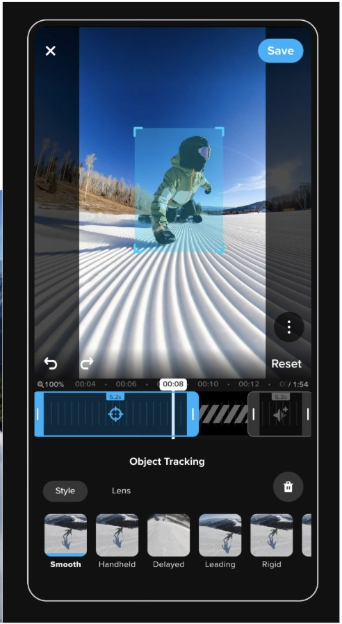
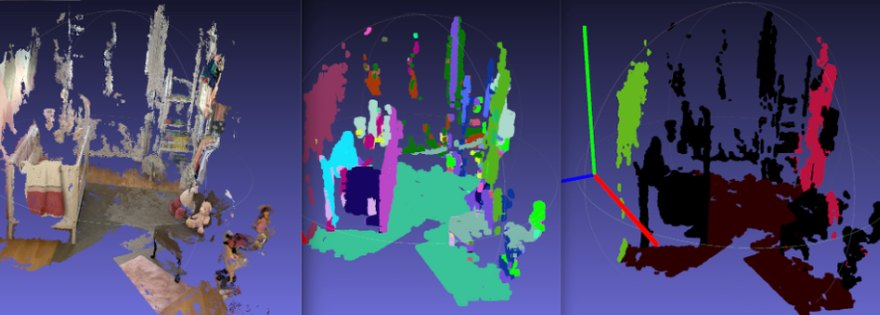
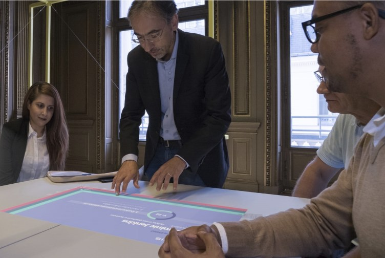
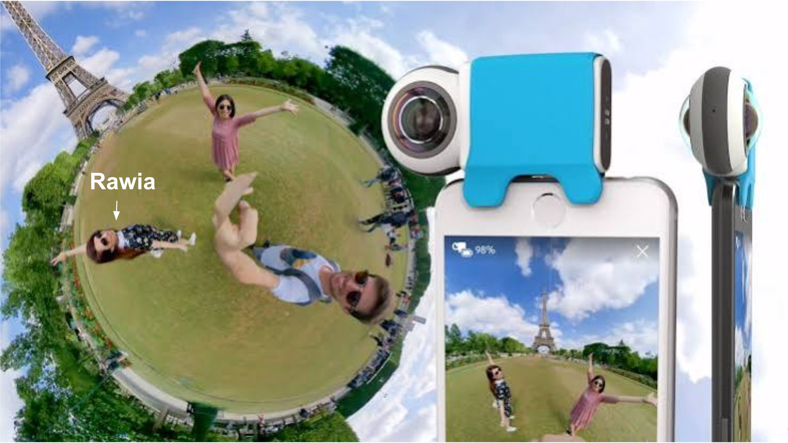
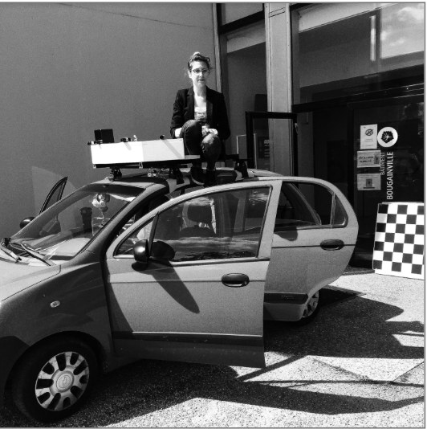

Experience
Computer Vision research, production AI systems, and engineering leadership.
GoPro · Paris
2021–PresentSenior Manager, Edge AI Algorithms (2022–Present) · Principal Engineer (2022) · Staff Engineer (2021–2022)
Built and led an Edge AI / Applied ML engineering team of 3–10 engineers, coordinating a portfolio of Computer Vision projects from early research through product integration. Worked across research, mobile engineering, product, and hardware platforms.
Delivered on-device capabilities including object tracking, automatic reframing, video denoising, human activity recognition, and content suggestions. Led explorations in embedding-based media search and multimodal video understanding, alongside inference optimization across iOS, Android, desktop, and cloud environments.

On-device Object Tracking & Intelligent Reframing
Optimizing Computer Vision models for resource-constrained devices and integrating subject tracking into mobile video editing workflows.
Samsung NEXT · Paris
2019–2020Senior Computer Vision Engineer
Developed and optimized 3D reconstruction algorithms for mobile devices, with an emphasis on accuracy and deployment constraints such as latency, memory, and power consumption.

Mobile 3D Reconstruction
Depth maps, point-cloud processing, and voxel-based 3D representations for on-device scene reconstruction.
Adok · Paris
2018–2019Computer Vision Technical Lead
Led a three-engineer R&D team working on camera/projector calibration and interactive touch tracking for a hardware-based projected interface.

Interactive Projection & Touch Tracking
Computer Vision methods for calibration, contact detection, and interaction on projected surfaces.
Giroptic · Lille
2016–2018Computer Vision R&D Engineer
Built an end-to-end photogrammetry and 3D reconstruction pipeline for 360° camera systems, from camera geometry and Structure-from-Motion to Multi-View Stereo and mesh generation.

360° Reconstruction Pipeline
Sparse geometry, dense reconstruction, and mesh generation from multi-view imagery.
University of Rouen
2015–2016Research & Teaching Assistant
Research on Computer Vision methods for obstacle detection and teaching in Computer Science.
INSA Rouen
2012–2015PhD in Computer Science · Computer Vision
Researched Structure-from-Motion and visual odometry with asynchronous multi-camera systems, with applications to intelligent vehicles and metric-scale motion estimation.

Structure-from-Motion with Asynchronous Cameras
Multi-view geometry, camera motion estimation, and visual odometry without requiring camera synchronization.